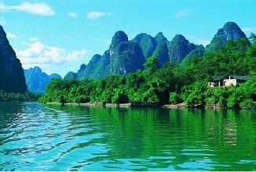
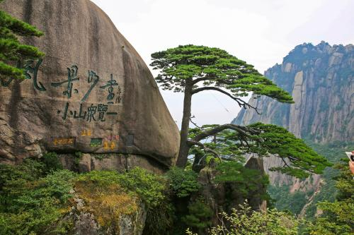
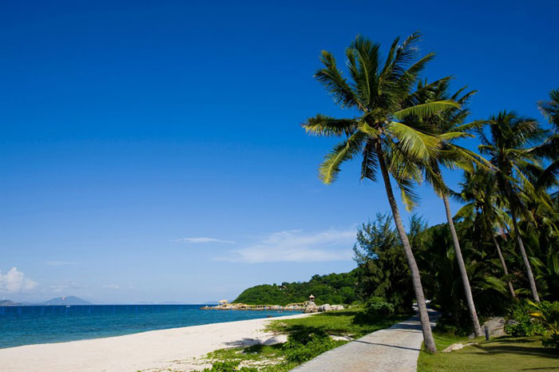
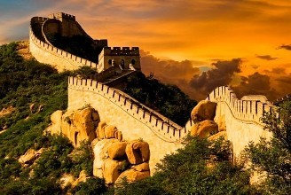
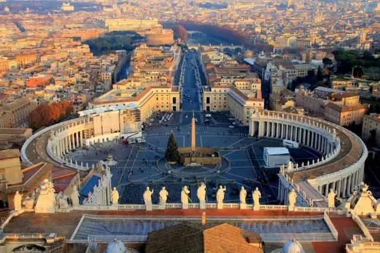
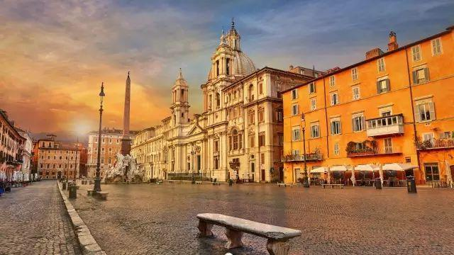
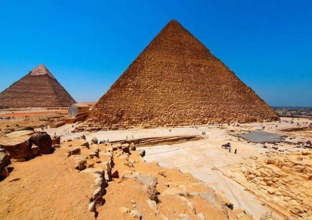
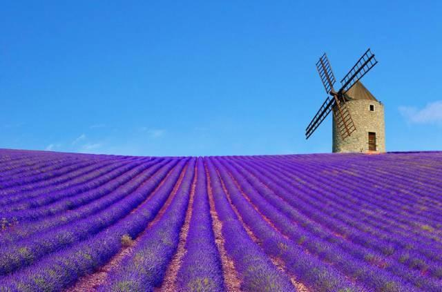
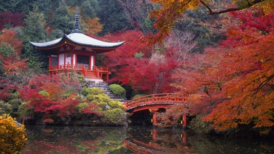

首页
视觉风景
主题故事
夜景专区
景点攻略
旅行分享
世界那么大，我想去看看
世界如此之大，我们却在眼前的小世界里奋力挣扎，生活一成不变，每天望着同样的天空，踩着同样的土地，就以为这是全世界。 总会抱怨种种因素而无法前行，其实真正阻挡脚步的是自己。 世界那么大，我想用脚步去丈量它，早晚有一天，我会走遍全世界。那就来一次说走就走的旅行吧！
驴友足迹
让你看到我的视界

桂林山水
自古有言：桂林山水甲天下，阳朔风景甲桂林。

黄山
日出，奇松、怪石、云海、温泉素称黄山“五绝”

三亚
位处热带的三亚，享有得天独厚的海天风景

长城
常言道：不到长城非好汉。

罗马
古罗马和世界灿烂文化的发祥地

伦敦
在这里你会遇见一个古典派的欧洲

开罗
《一千零一夜》：未见过开罗的人等于未见过世界

普罗旺斯
如果旅行是为了摆脱生活的桎梏，普罗旺斯会让你忘掉一切。

京都
日本花道、茶道的繁盛之地，被称为“真正的日本”。
+
驴友心迹
让你读到我的心声
为什么我想再去一次云南
我相信很多人关于云南的印象，一直停留在阳春三月的洱海、四季如春的昆明，也可能只见过这样的云南。可是在我看来深秋才是最接近云南的季节。这时候的云南不全是萧瑟的、黄色的，而是风情万种的。我想再去一次云南，看深秋的绚丽。你与云南的秋天，只差一个腾冲银杏村的距离。整个村庄约有......
柒公子 发表于一周前
漂流札记
到张家界旅行，最刺激的不是追云踏雾的山巅览胜，不是苗寨风情的篝火晚会，而是魅力四射的汝河漂流。当你把自己托付给一条小小的橡皮舟，任其在激流中上下翻飞，听天由命的时候，那是一种什么样的感受？这是我有生以来第一次漂流。在汝河码头，午后的阳光柔柔地照着。我花了三十大洋，购买......
佚名 2014-09-30
旅游后记
有人说，人生最好的旅行，就是在陌生的地方，发现一种久违的感动。有人说，旅行是一场艳遇。这里的艳，是指迷幻离奇。 遇见不同的风景，不同的人不同的事，发现不同的自己。在我看来，去什么地方，和什么人去，去的时间和路程，都直接影响了我们旅游的意义。比起和朋友家人旅游相比，和同事出游......
佚名 2014-09-24
驴友汇集
我愿告诉你我眼中的世界，你有兴趣听吗？